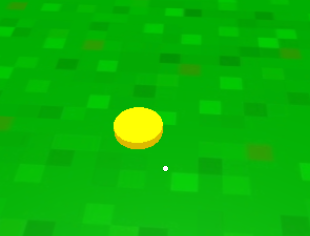
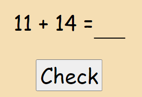
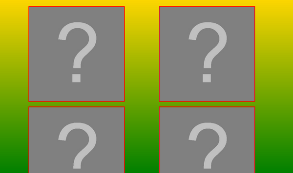
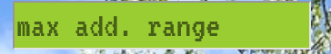
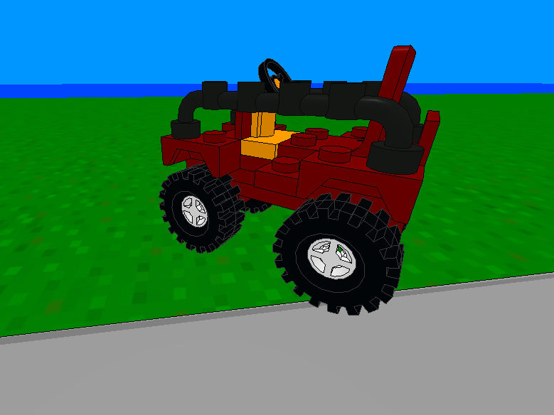

Explore the island, get the coins and unlock all graphics!
Steering
Mouse - look around
Left mouse button - interact
W, S, A, D - forward, back, left, right
A, Z - upwards, downwards
E - get out of the vehicle
F - toggle flashlight
Q - open/close collection
N - open/close message
L - lock controls
Tasks
There are several coins on the map.

This white dot is your pointer. After clicking you will see the display with task. You will get the point
for correct answer. For every coin you will also receive two graphics. Some other things are clickable -
check what can you change on allotment!


At the beginning your collection is empty. Q will open/close this window.
In menu you can set the range of number for tasks. In this way you can increase difficulty level.

Sometimes you will receive a message.

If you see such graphic in top right corner click N on keyboard to display text.
Vehicles
You can drive some vehicles. Just click on vehicle to use it.

You will unlock more vehicles after taking few coins.
Good luck!
Eksploruj wyspę, zdobądź monety i odblokuj wszystkie grafiki!
Polska wersja
Zaznacz opcję "PL", jeśli chcesz grać w polskiej wersji. Spróbuj zagrać po angielsku - to świetny trening
słówek!
Sterowanie
Rozglądaj się za pomocą myszy
Lewy przysick myszy - wykonanie akcji
W, S, A, D - do przodu, do tyłu, w lewo, w prawo
A, Z - do góry, w dół
E - wysiadanie z pojazdu
F - włącz/wyłącz światło
Q - otwarcie/zamknięcie kolekcji
N - otwarcie/zamknięcie wiadomości
L - "zablokowanie" sterowania - ruch myszą pozwala się rozglądać
Zadania
Na mapie rozmieszczono kilkanaście monet.
Ta biała kropka pozwala "celować". Po kliknięciu w monetę pojawia się okienko z zadaniem. Po udzieleniu
poprawnej odpowiedzi otrzymasz punkt. Dodatkowo za każdą monetę otrzymujesz dwie grafiki. Kilka innych
rzeczy reaguje na kliknięcia - sprawdź co możesz zmienić na działce!
Na początku Twoja kolekcja jest pusta. Q otwiera/zamyka to okno.
Przed grą możesz ustawić maksymalny zakres dodawania (minimum 10) - w ten sposób możesz zwiększyć poziom
trudności.
Czasami otrzymasz wiadomość.
Gdy zobaczysz taką grafikę w prawym górnym rogu, kliknij N na klawiaturze, by ją wyświetlić.
Pojazdy
Możesz kierować niektórymi pojazdami. Po prostu klknij na pojazg, by go użyć.
Odblokujesz inne pojazdy, gdy zdobędziesz trochę monet.
Powodzenia!